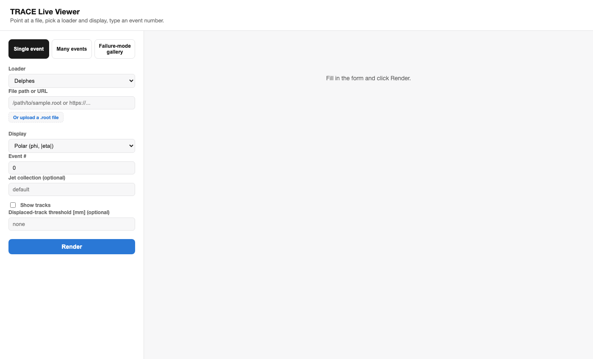
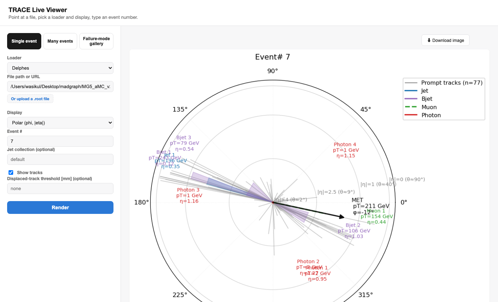
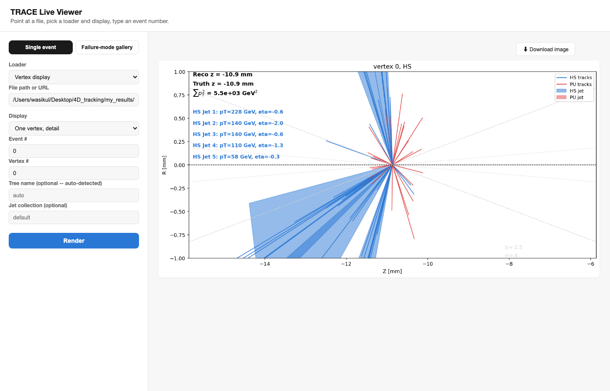
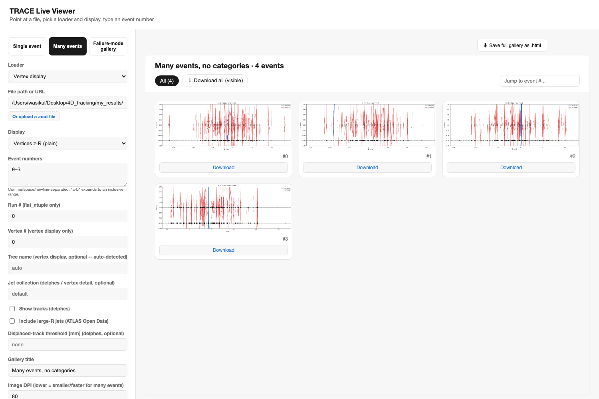
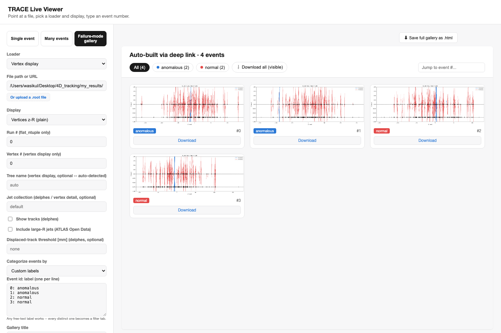
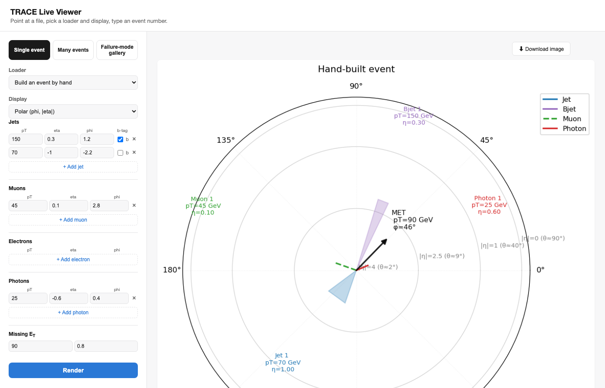

TRACE-HEP is a lightweight, format-agnostic Python toolkit for reconstructed-level collider event and vertex displays -- Delphes, ATLAS/CMS Open Data, samples of different formats, in 2D and interactive 3D, plus a live browser GUI.
Screenshots of trace-gui, the live interactive viewer -- point it at a
file (or build an event by hand), pick a display, and it renders in your browser.

Pick a loader, the Display dropdown updates automatically to that format's valid views.

A real ttbar Delphes event, loaded and drawn on demand -- with a Download-image button.

One loader auto-detects calo-timing vs. PHYSLITE vertex ntuples from their branches.

List event numbers ("1, 2, 4-6") and browse them all as a filterable gallery, no categorizing needed.

Compare two algorithms' pass/fail lists, or apply custom labels, and review the split visually.

No file at all -- type jets/leptons/photons/MET directly and render the same displays.
These are real, self-contained HTML pages -- fully interactive right here, no server, no install. The gallery below filters by category and downloads images; the 3D views are genuine WebGL plots you can drag to rotate and scroll to zoom.
12 real ttbar events, split into agree/disagree categories by two toy selections -- exactly the "algorithm 1 vs. algorithm 2" workflow.
Jets, a muon, photons, and MET for a real Delphes event -- drag to rotate, scroll to zoom.
Tracks with |d0| above a threshold are colored and labeled separately -- e.g. a long-lived-particle signature.
2 jets, a muon, and MET typed directly into trace-gui's manual builder -- no ROOT file at all.
A format-agnostic core, plus optional loaders for the ROOT ntuples you actually have.
Delphes, flat-ntuple, ATLAS & CMS Open Data, PHYSLITE, and calo-timing vertex ntuples -- auto-detected where possible.
Polar (φ, |η|), beam-axis 2D, and a real WebGL 3D view for every event.
z-R vertex displays, per-vertex track/jet detail, hard-scatter vs. pileup coloring when truth exists.
Turn a list of event numbers plus a category into one browsable, filterable HTML gallery.
trace-gui: single event, many events, or failure-mode gallery, all in one page.
The plotting core never requires ROOT or uproot -- loaders pull them in only when you use them.
This page is a static showcase -- GitHub Pages can't run the Python backend
trace-gui needs to read a ROOT file. Running it locally takes under a minute:
Install the package (only on TestPyPI for now, so both index flags are needed):
pip install --index-url https://test.pypi.org/simple/ \
--extra-index-url https://pypi.org/simple/ "trace-hep[gui,delphes]"
Launch the viewer -- it opens in your browser automatically:
trace-gui
Point it at a file (a path or a public https:// URL), or switch to
"Build an event by hand" and skip files entirely.